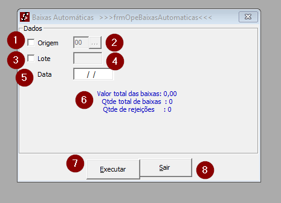
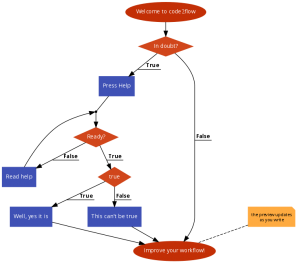
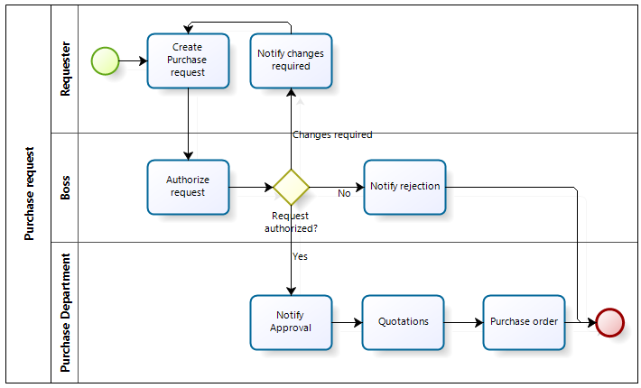

Baixas em Banco Correspondente
Image

Input
Inteiro: Origem
Inteiro: Lote
Data: Data
Output
Decimal: Valor em R$ do total das baixas.
Inteiro: Quantidade total de baixas.
Inteiro: Quantidade total de rejeições.
Descrição técnica
1 - Origem- Checkbox:
- 1.0.1 - Verifica se o checkbox está clicado, se sim, atribui para o item 2 o valor de vazio e ativa como visível.
- 1.0.2 - Se o checkbox não está clicado, atribui para o item 2 o valor de vazio e ativa como invisível.
- 1.0.3 - Chama a Sub rotina CalculaBaixas
2 - Descrição da origem - Textbox:
- 2.0.1 - Checa se o textbox tem valor '14', se não, desabilita o campo do item 5 colocando a data de hoje. Se sim, coloca 14 no textbox e deixa habilitado o item 5.
- 2.0.2 - Chama a Sub rotina CalculaBaixas
3 - Lote - Checkbox:
- 3.0.1 - Checa se o checkbox está clicado, se sim atribui vazio para o item 4 e ativa para receber input.
- 3.0.2 - Checa se o checkbox está clicado, se não atribui vazio para o item 4 e o desativa para receber input.
- 3.0.3 - Chama a Sub rotina CalculaBaixas
4 - Lote - Textbox:
- 4.0.1 - Cria consulta SQL na tabela
MovimentoDiarioEspecialselecionando o campoOrigemfiltrando pelo número do campoLoteda tabela. - 4.0.2 - Executa consulta no banco de dados.
- 4.0.3 - Checa se o número do lote existe, se sim, coloca ele no campo Textbox. Se não, exibe a seguinte mensagem "Número de lote não existente para baixa automática de parcelas".
- 4.0.4 - Checa se o textbox tem valor '14', se não, desabilita o campo do item 5 colocando a data de hoje. Se sim, coloca 14 no textbox e deixa habilitado o item 5.
- 4.0.5 - Chama a Sub rotina CalculaBaixas
5 - Data- Textbox:
- Recebe input de data.
6 - Mensagem - Label :
- Exibe valor em R$ do total de baixas
- Exibe quantidade total de baixas
- Exibe quantidade total de rejeições
7 - Executar - Botão:
- 7.0.1 - Checa se os campos estão vazios.
- 7.0.2 - Checa se a data (Item5) está preenchida e no formato correto.
-
7.0.3 - Verifica se o checkbox Origem (Item 1) e Lote (Item 3) estão preenchidos
-
7.0.4 - Checa se a variável
strTipoBDtem valor “ORACLE”, sem sim faz uma consulta no banco de dados na tabelaMovimentoDiarioEspecialcolocando empresa ativa e data do movimento. IncluiOrigemeLotecaso checkbox estiver preenchido e seta ‘Situacao’ para ‘00’ e ORIGEM para ‘02’. -
7.0.5 - Se a variável
strTipoBDé diferente de “ORACLE”: Faz uma consulta selecionando os campos:Contrato,Agencia,Parcela,DataPagamento,ValorPago,ValorDoc,Saldo,JurosMulta,IOC,Despesa,Desconto,OrgaoRecebedor,TipoValor,Origem,Lotee adiciona os campos TarifaAntecipacao com valor 0 e Sinistro como vazio. Adiciona também na consulta empresa ativa e data do movimento. Inclui Origem e Lote caso checkbox estiver preenchido , seta ‘Situacao’ para ‘00’ e ORIGEM para ‘02’. -
7.0.6 - Verifica se a consulta traz valores de acordo com os filtros acima.
- 7.0.7 - Cria o arquivo "baixasautomaticas.txt".
- Verifica se o campo
ValorDocda tabelaMovimentoDiarioEspecialé menor que 0, se sim, atribui a variáveldblValorDoco valor de 0. - 7.0.8 - Salva o resultado da consulta no arquivo 'baixasautomaticas.txt'
- 7.0.9 - Abre o arquivo 'baixasautomaticas.txt' e lê linha a linha atribuindo os valores do txt para as seguintes variáveis:
strContrato,strAgencia,,strParcela,,varDataPagamento,,dblValorPago,,dblValorDoc,,dblValorVencimento,,dblJurosMulta,,dblIofAtraso,,dblDespesas,,dblDescontoComandado,,strOrgaoRecebedor,,strTipoValor,,strOrigem,StrLote,dblTarifaAntecipacao,strSinistro
Trata pagamento total ou parcial
- 7.1.0 - Checa se o valor da variável
strTipoValor´é igual a 02,03 ou 07. - 7.1.1 - Cria um objeto atribuindo os valores de 7.0.9.
- 7.1.2 - Verifica se o atributo [strResultado] do objeto clsCalculaParcelas é vazio, se sim, incrementa a variável
intRejeitadose monta uma consulta de update SQL do primeiro item da tabelaMovimentoDiarioEspecial, setando o campoSituacaopara 02 e os restantes com as variáveis de 7.0.9. - 7.1.3 - Verifica se a variável
txtOrigemé igual a 07 e se sim, adiciona a consulta SQL de 7.1.2 o campo Lote com valor deStrLotede 7.0.9. - 7.1.4 - Atribui a consulta SQL de 7.0.9 o valor de '00' para o campo
Situacao. - 7.1.5 - Executa a consulta no banco de dados.
Efetua o pagamento da parcela
-
7.1.6 - Usa o objeto clsCalculaParcelas e seu atributos: [StrBanco], [strCheque], [dblValorVencimento], [dblJurosMulta], [dblIofAtraso], [dblDespesas], [dblDescontoComandado], [dblTarifaAntecipacao],[strSinistro] com os valores de 7.0.9. E com o atributo [strLiquidacaoPorDentro] checa se a variável
strOrgaoRecebedoré igual a '80000', se sim atribui 'S' e se não 'N'. -
7.1.7 - Cria uma consulta SQL que seleciona os campos
Contrato,PMTda tabelaMovimentoDiarioEspeciale filtra pelos camposEmpresa,Agencia,Parcela,Contrato. - 7.1.8 - Executa consulta de 7.1.8
- 7.1.9 - Verifica resultados da consulta, se retornou dados atribui o valor de FALSE para a variável
strContratoConsignadoe para o atributo [strContratoConsignado] do objeto clsCalculaParcelas. Se não atribui TRUE. - 7.2.0 - Verifica se [strContratoConsignado] é TRUE, se sim, cria um consulta SQL de seleção na tabela
Parcelasdo campoPMT, e faz a soma dos campos (Principal,Receita,SaldoRenda, ,RendaRevertida) gerando o nome de 'SaldoParcela'. - 7.2.1 - Cria o atributo [dblValorVencimento] do objeto clsCalculaParcelas o valor da variável
dblValorPagode 7.0.9. - 7.2.2- Cria a variável
dblVlrcom o valor da consulta item 7.2.0 do campo ,SaldoParcela. - 7.2.3- Checa se variável
dblValorPagoé maior quedblVlr, se sim atribui a variávelstrResultadoa mensagem "Valor recebido é maior que o saldo em aberto da parcela". - 7.2.4- Verifica se a variável
strResultadoé igual a vazio, se sim, verifica se a variávelstrTipoValor´é igual a '03', atribui TRUE e FALSE respectivamente para o atributo [PagaParcela] de objeto clsCalculaParcelas. - 7.2.5- Checa se atributo [strResultado] e variável
strResultadosão direferantes de vazio. Se sim, incrementa variávelintRejeitadose monta consulta SQL de update na tabelaMovimentoDiarioEspecial. Seta campoSituacaopara '02', seta campo Observacoes com a checagem do atributo [strResultado] for igual a vazio preenche com do atributo [strResultado] se não com a variávelstrResultado. Cria condição com os campos da tabela com as varíavels de 7.0.9. - 7.2.6 - Verifica se a variável
txtOrigemé igual a 07, se sim, adiciona a consulta SQL de 7.2.5 o campo Lote com valor deStrLotede 7.0.9. - 7.2.7 - Atribui a consulta SQL de 7.0.9 o valor de '00' para o campo
Situacao. - 7.2.8 - Executa a consulta no banco de dados.
- 7.2.9 - Incrementa variável
intAceitos. - 7.3.0 - Monta consulta SQL de update na tabela
MovimentoDiarioEspecial. Seta campoSituacaopara '01', seta campo Observacoes com a checagem do atributo [strResultado] for igual a vazio preenche com do atributo [strResultado] se não com a variávelstrResultado. Cria condição com os campos da tabela com as varíavels de 7.0.9. - 7.3.1- Mesmo procedimento de 7.2.6.
- 7.3.2- Checa se o valor da variável
strTipoValor´é igual a 02 ou 05. - 7.3.3- Incremanta variável
intProcessados. - 7.3.4- Chama a função LiquidaContrato() e atribui o resultado dela para a váriavel
strResultado. - 7.3.5- Checa se variável
strResultadoé diferente de vazio, se sim, incrementa variávelintRejeitados. - 7.3.6- Mesmo procedimento de 7.3.0.
- 7.3.7- Incrementa variável
intAceitos. - 7.3.8- Monta consulta SQL de update na tabela
MovimentoDiarioEspecial. Seta campoSituacaopara '01', seta campoObservacoespara vazio. Cria condição de atualização de acordo com os campos da tabela e com as varíavels de 7.0.9. - 7.3.9- Verifica se a variável
txtOrigemé igual a 07, se sim, adiciona a consulta SQL de 7.2.5 o campo Lote com valor deStrLotede 7.0.9. - 7.4.0 - Atribui a consulta SQL de 7.0.9 o valor de '00' para o campo
Situacao. - 7.4.1 - Executa a consulta no banco de dados.
- 7.4.2- Atribui a mensagem 'Tipo de Boleto não suportado!' para a variável
strObservacao. - 7.4.3- Checa se o valor da variável
strTipoValoré igual a 99. Se sim, monta consulta SQL com os seguinte campoObservacoesda tabelaMovimentoDiarioEspeciale filtra pelos camposEmpresa,DataMovimento,Agencia,Contrato,Parcela,ValorPago,ValorDoc,Saldo,JurosMulta,IOC,Despesa,Desconto,TarifaAntecipacao. - 7.4.4- Mesmo procedimento de 7.3.9.
- 7.4.5- Mesmo procedimento de 7.4.0.
- 7.4.6- Chama a função ValidaOnLine() passando como parâmetro a string de SQL de 7.4.3 e o campo de
Observacoescom alias de 'Obs'. Salva o resultado na variávelstrObservacaoLida. Checa sestrObservacaoLidaé diferente de vazio, se sim, atribui para a variávelstrObservacaoo valor destrObservacaoLida. - 7.4.7- Incrementa variável
intRejeitados. - 7.4.8- Monta consulta SQL de update na tabela
MovimentoDiarioEspecial. Seta campoSituacaopara '02', seta campoObservacoespara o valor da variávelstrObservacao. Cria condição de atualização de acordo com os campos da tabela e com as varíavels de 7.0.9. - 7.4.9- Verifica se a variável
txtOrigemé igual a 07, se sim, adiciona a consulta SQL de 7.2.5 o campo Lote com valor deStrLotede 7.0.9. - 7.5.0- Atribui a consulta SQL de 7.0.9 o valor de '00' para o campo
Situacao. -7.5.1- Executa a consulta no banco de dados. -7.5.2- Mostra na tela valores no item 6. -7.5.3- Exibe mensagem de aviso sobre o processo concluído, mostra quantidade de erros, quantidade de baixas aceitas (variávelintAceitos), quantidade de baixas rejeitadas (variávelintRejeitados).
8 - Sair - Botão:
- Fechar o formulário.
Funcões
- LiquidaContrato()
- ValidaOnLine()
- FormataData()
- [DbOpenCursor]
- DbGetData
- [DbCloseCursor]
Subrotinas e itens de navegação
- ChkLote_Click
- ChkOrigem_Click
- CalculaBaixas
- Cancela
- CmdlistaOrigem_Click
- Form_Load
- txtLote_LostFocus
- TxtOrigem_lostfocus
Classes usadas
- CalculaContrato
- ConexaoOdbc
Forms usados
- frmOpeBaixasAutomáticas
Módulos usados
- FUNCOES
Subrotinas - Descrição técnica
Sub - Cancela
- Sub - 1.0.0 - Apaga todos os valores do form.
- Sub - 1.0.1 - Chama item 1 Origem- Checkbox e item 3 - Lote - Checkbox.
Sub - CalculaBaixas
- Sub - 2.0.0 - Cria consulta SQL de seleção na tabela
MovimentoDiarioEspecialsomando os camposValorPagoeDespesa, e fazendo uma contagem da quantidade de linhas. Filtra pelo camposEmpresa.DataMovimentoeSituacaodiferente de '01'. - Sub - 2.0.1- Verifica se os valores de checkbox de Lote (item 1) e de Origem (item 3) estão preenchidos, se sim, adiciona a consulta o filtro.
- Sub - 2.0.2- Realiza a consulta de Sub 2.0.0 e salva os valores na variável
lngTotalRegArquivo. - Sub - 2.0.3- Realiza mesmo procedimento de Sub - 2.0.0 e Sub - 2.0.1, alterando apenas o filtro de
Situacaoigual a '00'. - Sub - 2.0.4- Realiza consulta no banco de dados, e caso retornem dados atualiza form para valores vazios e sai da sub CalculaBaixas.
- Sub - 2.0.5- Através da função DbGetData preenche o item 6 com a o Valor total das baixas, Quantidade total de baixas, Quantidade de rejeições.
- Sub - 2.0.6- Verifica se o item 2 está preenchido com o valor '09', se sim, atribui o 'Valor total de baixas' para a variável
TxtBaixas.
Sub - Form_Load
- Sub - 3.0.0 - Chama a Centraform e a sub rotina Cancela.
Banco de dados - Tabelas atreladas
| Nome da tabela | |
|---|---|
| MovimentoDiarioAcordos | |
| ConvenioFaturaDetalhe | |
| Parcelas | |
| Origem | |
| Bancos | |
| MovimentoDiarioEspecial | |
| CobrancaParcelasAcordosParcelas |
Fluxo de código

Descrição negocial
- Realiza a baixa de parcelas usando origem, lote e data.
Descrição negocial- Flow
